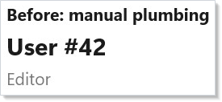
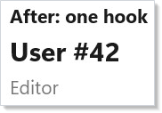
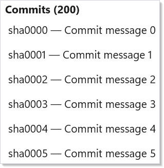
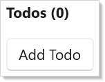
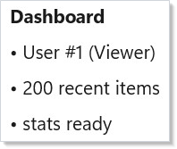

Async Resources¶
Microsoft.UI.Reactor (Reactor)'s async hooks — UseResource, UseInfiniteResource, and
UseMutation — replace the "one UseState for data, one for loading, one
for error, one UseEffect to tie them together" pattern. They own the
fetch lifecycle: cancellation on deps-change, drop late results after
unmount, shared caching across siblings, and stale-while-revalidate by default.
| Hook | Use it for |
|---|---|
UseResource |
A single async read (fetch one record, one page, one computed value) |
UseInfiniteResource |
Cursor-paginated reads paired with VirtualList or scroll-driven loaders |
UseMutation |
Optimistic writes with InvalidateKeys to refresh sibling resources |
PendingFactory.Pending |
Hold a fallback in place until every nested resource leaves Loading |
For the full state-machine reference, see async-system.md. This page is task-oriented: each section is a recipe you can copy.
Porting UseEffect + UseState → UseResource¶
The old pattern: three UseState hooks (data, error, loading) plus a
UseEffect that orchestrates the fetch, cancellation, and state updates:
class BeforeUseResourceExample : Component
{
public override Element Render()
{
var (data, setData) = UseState<DemoApi.User?>(null);
var (error, setError) = UseState<Exception?>(null);
var (loading, setLoading) = UseState(true);
UseEffect(() =>
{
var cts = new CancellationTokenSource();
setLoading(true);
_ = Task.Run(async () =>
{
try
{
var u = await DemoApi.GetUserAsync(42, cts.Token);
if (!cts.IsCancellationRequested)
{
setData(u);
setError(null);
setLoading(false);
}
}
catch (OperationCanceledException) { /* swallow */ }
catch (Exception ex)
{
if (!cts.IsCancellationRequested)
{
setError(ex);
setLoading(false);
}
}
});
// Cancel only. The fire-and-forget worker shares ownership of the
// source, and CancellationTokenSource.Dispose is not safe alongside
// concurrent member access — a cancellation-aware call still
// registering against the token would see ObjectDisposedException.
// Nothing leaks: a CTS with no timer holds no unmanaged resource, so
// dropping the reference is enough. Dispose only when a single owner
// can prove the worker has finished.
return () => cts.Cancel();
}, 42);
if (loading) return (Element)TextBlock("Loading…").Padding(24);
if (error is not null) return (Element)TextBlock($"Error: {error.Message}").Padding(24);
return VStack(4,
Heading("Before: manual plumbing").FontSize(14),
TextBlock(data?.Name ?? "(none)").FontSize(20).Bold(),
TextBlock(data?.Role ?? "").Opacity(0.6)
).Padding(24);
}
}

UseResource collapses all four into one call. The fetcher receives a
cancellation token that fires on deps change or unmount; the hook returns
an AsyncValue<T> you pattern-match against:
class AfterUseResourceExample : Component
{
public override Element Render()
{
var user = UseResource(
ct => DemoApi.GetUserAsync(42, ct),
deps: new object[] { 42 });
return user.Match<Element>(
loading: () => TextBlock("Loading…").Padding(24),
loaded: u => VStack(4,
Heading("After: one hook").FontSize(14),
TextBlock(u.Name).FontSize(20).Bold(),
TextBlock(u.Role).Opacity(0.6)
).Padding(24),
error: ex => TextBlock($"Error: {ex.Message}").Padding(24));
}
}

AsyncValue<T>.Match dispatches on the four states:
Loading (first fetch), Data(value) (success), Error(exception) (failure),
and Reloading(previous) (stale-while-revalidate — a refetch with the old value
still available). Omitting the reloading arm makes it fall through to the
loading arm, so a refresh shows the loading UI. To keep the last-known value
visible while revalidating (stale-while-revalidate), pass a reloading: handler
explicitly.
Infinite Scroll with UseInfiniteResource¶
UseInfiniteResource models a cursor-paginated read. Drive fetches from
ItemAt(i) inside a VirtualList renderItem — that's the pull model:
the virtualizer asks for item i, the hook schedules whichever page covers it,
and the row renders a shimmer until the page lands:
class InfiniteScrollExample : Component
{
public override Element Render()
{
var commits = UseInfiniteResource<DemoApi.Commit, string>(
fetchPage: async (cursor, ct) =>
{
var (items, next, total) = await DemoApi.GetCommitsPageAsync(cursor, ct);
return new Page<DemoApi.Commit, string>(items, next, total);
},
deps: new object[] { "repo-main" });
return VStack(4,
Heading($"Commits ({commits.TotalCount ?? 0})").FontSize(14),
VirtualList(
itemCount: commits.TotalCount ?? Math.Max(commits.Items.Count, 20),
renderItem: i =>
{
var commit = commits.ItemAt(i);
return commit is null
? TextBlock("…").Opacity(0.4).Padding(4)
: TextBlock($"{commit.Sha} — {commit.Message}").Padding(4);
},
getItemKey: i => commits.ItemAt(i)?.Sha ?? $"placeholder-{i}",
itemHeight: 32,
onVisibleRangeChanged: (first, last) => commits.EnsureRange(first, last))
.Height(200)
).Padding(24);
}
}

Scrolling ahead faults in new pages automatically. LoadState drives
footer UI (spinner, end-of-list marker, retry button). For explicit
prefetching, call commits.EnsureRange(first, last) from the
onVisibleRangeChanged callback — faster than row-by-row ItemAt.
Pull-to-refresh is commits.Refresh(): it cancels in-flight fetches,
clears the page table, and refetches page 0. Retry after error is
commits.Retry() — only the failed page is re-requested.
Migrating from a DataPageCache-Style Cache¶
If you've rolled a block-cache over IDataSource<T> — the pre-Phase-3
DataPageCache<T> is the canonical example — the replacement path is five
mechanical steps:
- Swap the cache field for a hook call. Replace the long-lived
DataPageCache<T>instance withvar resource = UseDataSource(source, request, options);.UseDataSourcebridges anyIDataSource<T>ontoUseInfiniteResourceusingrequest.ContinuationTokenas the cursor. - Read from
resource.Items[i]. The sparseIReadOnlyList<T?>has null placeholders for in-flight slots. This replacescache.PeekItem(i)plus theLoadingBlocksentinel. - Drop
BlockLoadedevent wiring. The hook re-renders the component on every state transition — no manual subscription needed. - Route prefetch through
EnsureRange. Replacecache.RequestBlock(i)calls insideonVisibleRangeChangedwithresource.EnsureRange(first, last). The hook dedups in-flight fetches. - Request changes = deps change. Sort/filter/search updates flow
through
requestinto the hook's deps. The hook cancels in-flight fetches, unsubscribes the old cache keys, and restarts on page 0.
The DataGrid<T> built-in runs both code paths today, gated by
ReactorFeatureFlags.UseHookBasedPaging. See
data-system.md for the full DataGrid story.
Mutation overlay still lives on the caller. The hook's page table is server-sourced and immutable. Optimistic edits should be kept in your own overlay (
Dictionary<int, T>) that takes precedence overresource.Items[i]at read time.DataGridState<T>implements this pattern — see its_mutationsfield for the reference shape.
Optimistic Writes with UseMutation¶
UseMutation separates reads from writes. Register it once per component;
call mutation.RunAsync(input) from click handlers. The optimistic
callback fires synchronously so the UI never flashes stale data waiting
for the server:
class UseMutationExample : Component
{
public override Element Render()
{
var (todos, setTodos) = UseState<IReadOnlyList<DemoApi.Todo>>(Array.Empty<DemoApi.Todo>());
var mutation = UseMutation<DemoApi.TodoInput, DemoApi.Todo>(
mutator: (input, ct) => DemoApi.AddTodoAsync(input, ct),
options: new MutationOptions<DemoApi.TodoInput, DemoApi.Todo>(
OnOptimistic: input =>
setTodos([.. todos, new DemoApi.Todo(input.Title, IsTemporary: true)]),
OnSuccess: (todo, _) =>
setTodos([.. todos.Select(t => t.IsTemporary ? todo : t)]),
OnError: (_, input) =>
setTodos([.. todos.Where(t => t.Title != input.Title)]),
InvalidateKeys: ["todos/list"]));
return VStack(8,
Heading($"Todos ({todos.Count})").FontSize(14),
VStack(2, todos.Select(t =>
TextBlock(t.Title + (t.IsTemporary ? " (saving…)" : ""))
.Opacity(t.IsTemporary ? 0.5 : 1.0)
.WithKey(t.Title)).ToArray()),
Button("Add Todo",
() => _ = mutation.RunAsync(new DemoApi.TodoInput($"Item {todos.Count + 1}")))
).Padding(24);
}
}

InvalidateKeys invalidates cache entries on success. Any sibling
UseResource subscribed to those keys observes the invalidation and
refetches. On error, InvalidateKeys does not fire — the server
state didn't change, so the cache is still valid.
Unmount during pending cancels the mutator token. OnError does not
fire for cancellation — it's silent, matching UseResource's
cancellation semantics.
Pending Fallbacks¶
Wrap a subtree that depends on multiple resources in
PendingFactory.Pending(fallback, child). The fallback stays visible
until every UseResource / UseInfiniteResource inside the subtree has
left the initial Loading state:
class PendingFallbackExample : Component
{
public override Element Render()
{
return PendingFactory.Pending(
fallback: TextBlock("Loading dashboard…").Opacity(0.5).Padding(24),
child: VStack(8,
Heading("Dashboard").FontSize(14),
Component<UserHeader>(),
Component<RecentActivity>(),
Component<Stats>()
).Padding(24));
}
private class UserHeader : Component
{
public override Element Render()
{
var user = UseResource(
ct => DemoApi.GetUserAsync(1, ct),
deps: new object[] { "user-1" });
return user.Match<Element>(
loading: () => TextBlock("• user loading…").Opacity(0.5),
loaded: u => TextBlock($"• {u.Name} ({u.Role})"),
error: ex => TextBlock($"• error: {ex.Message}"));
}
}
private class RecentActivity : Component
{
public override Element Render()
{
var feed = UseInfiniteResource<DemoApi.Commit, string>(
fetchPage: async (cursor, ct) =>
{
var (items, next, total) = await DemoApi.GetCommitsPageAsync(cursor, ct);
return new Page<DemoApi.Commit, string>(items, next, total);
},
deps: new object[] { "feed" });
return TextBlock($"• {feed.Items.Count} recent items");
}
}
private class Stats : Component
{
public override Element Render()
{
var user = UseResource(
ct => DemoApi.GetUserAsync(99, ct),
deps: new object[] { "stats" });
return user.Match(
loading: () => TextBlock("• stats loading…").Opacity(0.5),
loaded: _ => TextBlock("• stats ready"),
error: ex => TextBlock($"• error: {ex.Message}"));
}
}
}

Both trees are mounted — the child renders in the background so it's
ready when all three resources resolve. Reloading (stale-while-revalidate
refetches) does not re-trigger the fallback; only the initial Loading
does. This matches TanStack's Suspense semantics and avoids the "blink
every revalidation" anti-pattern.
Tips¶
Keep deps value-comparable. A new List<T> or lambda each render
will thrash the hook's deps-change detection. Memoize with UseMemo, or
project to a scalar cache key. Wait for REACTOR_HOOKS_004 (WIP) to
flag the pattern at compile time.
Only use UseResource for reads. The hook may retry and refetch —
non-idempotent fetchers will double-create on retry. Use
UseMutation for writes.
Cursor paging is inherently serial. UseInfiniteResource must load
page N-1 before requesting page N because the cursor lives in the
previous page's payload. For parallel offset-based paging, pass an offset
as the cursor and InfiniteResourceOptions.PageSize to size each batch —
the hook won't parallelize for you.
Don't share a CacheKey across unrelated hooks. The default per-hook
auto-key keeps siblings independent. Opt into sharing explicitly via
ResourceOptions.CacheKey — typically when you want two distant subtrees
to observe the same entry.
Pending applies only to Loading, not Reloading. If the fallback
flashes on every refetch, you've probably wrapped the resource in a
Pending that's checking Reloading too. Read the spec's §10.1 for the
exact predicate.
Next Steps¶
- Effects and Lifecycle — Previous: the
UseEffectprimitive underneath the old pattern - Commanding — Next: command tracking with async execution
- Data System — Full DataGrid story including hook-based paging
- Hooks — Core hook primitives (
UseState,UseReducer,UseRef)